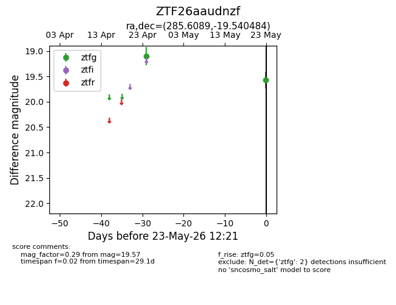
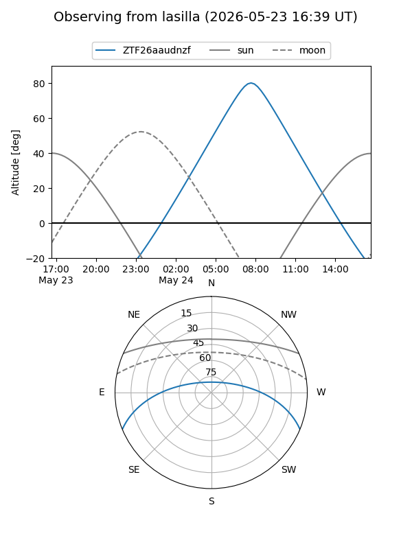
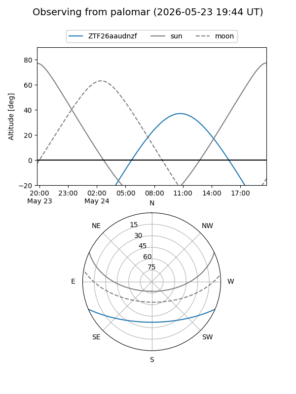

ZTF26aaudnzf
Target ZTF26aaudnzf at 2026-05-23 12:23
Aliases and brokers:
lsst-FINK: link
lsst-Lasair: link
lsst-ALeRCE: link
ztf-FINK: link
ztf-Lasair: link
ztf-ALeRCE: link
alt names
ZTF26aaudnzf (ztf,fink_ztf)
Coordinates:
equatorial (ra, dec) = 285.6089,-19.54048
equatorial (HMS+DMS) = 19:02:26.14,-19:32:25.74
galactic (l, b) = (16.5309,-11.11312)
Flags:
Photometry:
last ztfg=19.57
2 ztfg detections
Lightcurve

Visibility


Additional plots